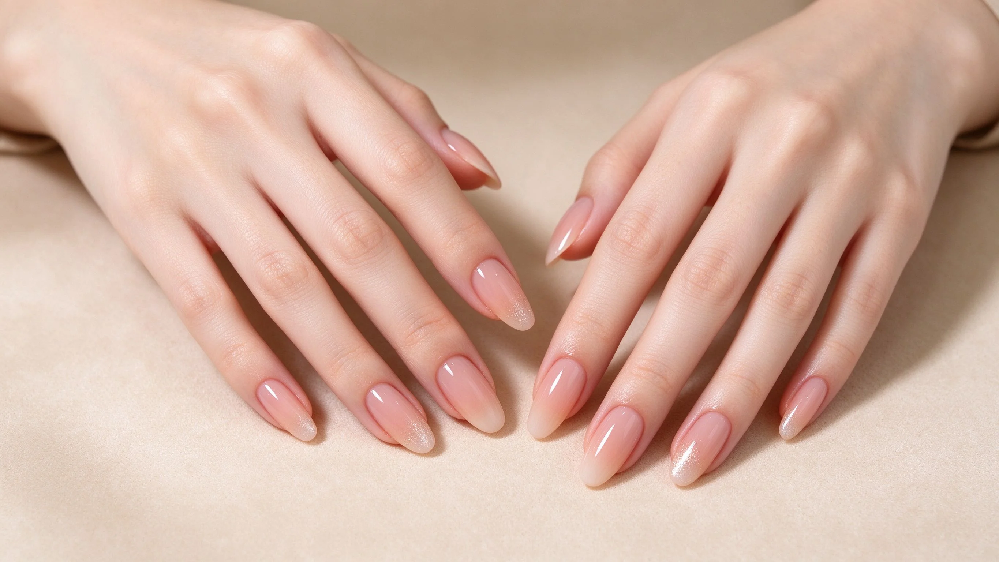
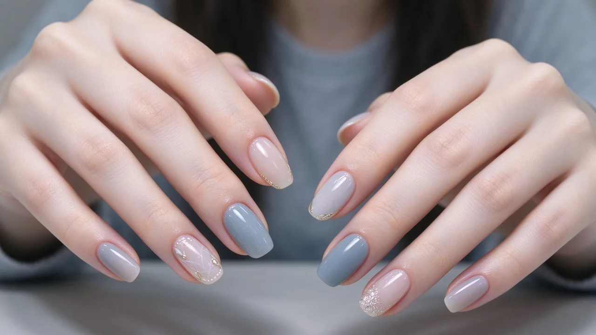

美
NailPut 美甲知識庫
✕
NAIL ART ENCYCLOPEDIA · NailPut 美甲知識庫
從入門到疑難，一次搞懂美甲
最齊全的大白話美甲知識庫：原理、做法步驟、優缺點、新手雷區

最新文章
依建置順序排列，每篇皆為完整內容
疑難排解
縮膠
2026-10-10
選用比較
凝膠 vs 水晶
2026-10-10
選用比較
LED 燈 vs UV 燈
2026-10-10
選用比較
硬膠 vs 軟膠
2026-10-10
選用比較
延甲 vs 甲片
2026-10-10
選用比較
依生活選做法
2026-10-10
選用比較
依甲況選做法
2026-10-10
選用比較
依風格選款式
2026-10-10
11 大主題群
點擊卡片展開子分類與說明
入門與基礎
Basics
新手入門
認識指甲結構、衛生消毒與新手工具，美甲師的第一本說明書。
認識指甲與甲床
衛生消毒與器材
美甲師入門
進入「入門與基礎」→
凝膠美甲
Gel Nails
凝膠與水晶系統
凝膠的原理、底膠、光療燈與固化，一次講透。
凝膠基礎
底膠與上層
光療燈與固化
可剝凝膠
進入「凝膠美甲」→
水晶指甲
Acrylic Nails
凝膠與水晶系統
水晶粉與液體粉的原理、延甲與雕塑。
水晶原理
水晶延甲
水晶雕塑
進入「水晶指甲」→
彩繪技法
Nail Art Techniques
技法與款式
從手繪、漸層暈染到法式，彩繪基本功大全。
手繪彩繪
漸層與暈染
大理石與紋理
法式美甲
進階技法
進入「彩繪技法」→
款式風格
Nail Styles
技法與款式
果凍、裸色、婚禮、Y2K……款式字典。
流行款式
極簡與商務
場合款式
個性風格
進入「款式風格」→
延甲與矯正
Extension & Correction
延甲保養與產品
把指甲變長、變美，矯正咬甲與畸形甲。
延甲技法
甲型矯正
甲片應用
進入「延甲與矯正」→
卸甲與保養
Removal & Care
延甲保養與產品
正確卸甲與指甲健康，別再傷甲床。
正確卸甲
指甲健康
手部保養
進入「卸甲與保養」→
產品與工具
Products & Tools
延甲保養與產品
選對色膠、彩繪筆與設備，少花冤枉錢。
色膠選擇
工具挑選
設備與環境
進入「產品與工具」→
沙龍經營
Salon Business
經營與疑難
定價、服務、行銷與衛生法規一把抓。
定價與成本
服務流程與客訴
行銷與社群
衛生法規與證照
進入「沙龍經營」→
疑難排解
Troubleshooting
經營與疑難
起翹、變黃、過敏……問題對症下藥。
起翹與掉落
變黃與染色
過敏與刺激
新手失誤
進入「疑難排解」→

選用比較
Compare & Choose
比較與選用
凝膠 vs 水晶、延甲 vs 甲片，一次比清。
技法對照
選用指南
進入「選用比較」→
檢索工具
A–Z
字母索引
依英文名稱首字瀏覽全站 128 篇文章
標籤
標籤彙整
依標籤跨主題檢索相關文章
搜尋
全站搜尋＋多面向篩選
關鍵字、主題、難度篩選
站點
Sitemap
網站地圖（爬蟲專用）
全站導覽
✕